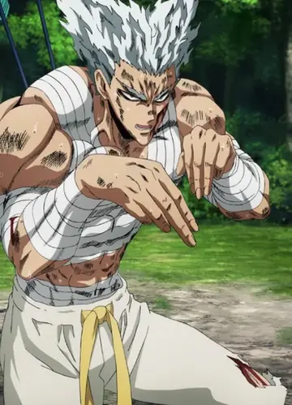

Garoué um dos principais antagonistas e um prodígio das artes marciais em One-Punch Man, autoproclamado "Caçador de Heróis" e "Monstro Humano". Ex-discípulo de Bang, ele busca se tornar o "Mal Absoluto" para unir a humanidade através do medo, caçando heróis da Associação, mas sem matá-los.

Para saber mais sobre Garou, visite o site da Fandom